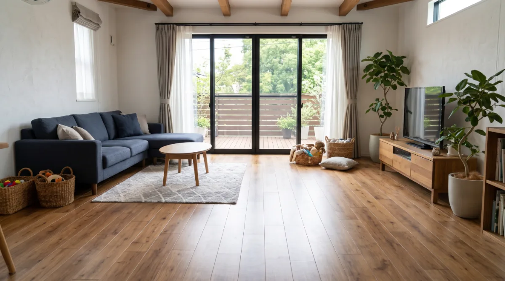

A Line Coat
自然なAラインコート / マットガラス
ガラスコーティング（30年耐久・10年保証）低光沢
耐久年数
30年 保証年数
10年
30年 保証年数
10年

各種フロアコーティングの中でも特に耐傷性、防汚性に優れているのがガラスフロアコーティング。光沢が強くない床を好む方に人気の、長耐久最高ランクのフロアコーティングです。
施工作業について：ガラスコーティングは自然硬化タイプの液剤なので、塗布直後は一番光沢が出ている状態ですが、硬化が進むにつれ光沢が落ち着きます。
おすすめポイント
- 1優れた耐傷性
- 2自然な低光沢
- 330年耐久
※床材の種類・色により光沢の出方は異なります。